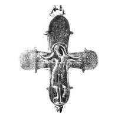
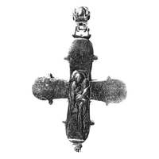

Catalog › CE-1043 · KOR2003-III.1.1.69
Encolpion întreg cu inel ulterior cu Chipul Nefăcut de mână omenească, Răstignire și Odighitria
sec. mijlocul XII (inel de agățare ulterior) (1101–1200) · loc necunoscut · Muzeul de Istorie de Stat, Moscova (GIM), secția de arheologie, inv. № 7210, оп. 1907, № 1
double-sided reliquary cross (enkolpion), aramă; c. mijlocul XII (inel de agățare ulterior) (1101–1200); find spot unknown; kept at Muzeul de Istorie de Stat, Moscova (GIM), secția de arheologie.




Identificare
- Categorie
- Encolpion bivalv (relicvar)
- Material
- Aramă
- Tehnică
- Turnare în relief; Gravare (incizie); Niello
- Stare
- Întreagă
- Dimensiuni
- Î 105 × L 95 mm
Iconografie
- Avers
- Sf. Ioan; Sf. Gheorghe
- Descriere avers
- Encolpion întreg, cu inel de agățare ulterior, cu imaginea Mântuitorului Nefăcut de mână omenească. Pe valva de față Răstignirea reliefată, cu imagini în niello pe laturi ale adstanților, Maica Domnului și Sf. Ioan Teologul, și ale unui sfânt militar (Gheorghe) sus.
- Revers
- Maica Domnului cu Pruncul; Sf. Nicolae; Sf. Petru; Neidentificat
- Descriere revers
- Pe valva de revers imaginea reliefată a Maicii Domnului Odighitria și imagini (în niello?) ale sfinților din medalioane: Nicolae (sus), Pavel (stânga) și Petru (dreapta).
- Inscripții
- МР ΘҮ; НАНО; ГО/ВГН; IC XC/МР ΘҮ; ННК/ЛА; ПА; ПТ/Р
- Limba
- Slavonă
Datare și atribuire
- Datare
- sec. mijlocul XII (inel de agățare ulterior) (1101–1200)
- Centru
- Necunoscut
- Tipologie
- Korzukhina–Peskova 2003, tip III 1 1
Descoperire
- Context
- Colecție (fără context)
Păstrare și referințe
- Colecție
- Muzeul de Istorie de Stat, Moscova (GIM), secția de arheologie
- Nr. inventar
- № 7210, оп. 1907, № 1
- Bibliografie
- G. F. Korzukhina, A. A. Peskova, Древнерусские энколпионы. Нагрудные кресты-реликварии XI–XIII вв., Sankt-Petersburg, 2003 [Korzukhina–Peskova 2003], p. 109, cat. nr. III 1 1/69, reprodusă la Табл. 51 (planșe, p. 293).
- Figura
- Табл. 51
- Planșe
- Korzukhina–Peskova 2003, Табл. 51 (planșă fără paginație proprie în PDF; p. 293 tipărită)
- Observații
- Datare după Peskova: sec. mijlocul XII (inel de agățare ulterior). Inscripții adâncite: pe față sub mâinile lui Hristos МР ΘҮ НАНО, sub medalionul de sus ГО/ВГН; pe revers lângă figura Maicii Domnului IC XC/МР ΘҮ, în medalioane ННК/ЛА, ПА, ПТ/Р. Foto GIM. Inscripții mixte: formule grecești și nume slavone, unele stilizate sau stricate. Coordonate: nu sunt date în sursă.
Citare: Corpus Encolpiorum, CE-1043, Encolpion întreg cu inel ulterior cu Chipul Nefăcut de mână omenească, Răstignire și Odighitria, --root/piese/KOR2003-III.1.1.69/ (accesat 2026-10-17).